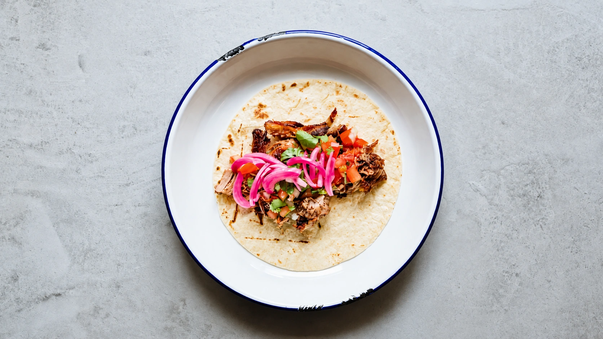

Rankų darbo tacos. Austin, TX stilius.
Iš Ostino į Vilnių. Per tacos.
Minkštos tortilijos, ryškūs skoniai ir vieta susitikti Naujamiestyje. Užsukite alkani - tacos jau laukia.

Donde•Iš Ostino į Vilnių. Per tacos.•Tex-Mex virtuvė Vilniuje•
Donde virtuvė
Istorija, prasidėjusi nuo pasiilgto skonio
Ostine užaugusi Lindrė Vilniuje pasiilgo Tex-Mex virtuvės. Taip gimė Donde - pradžioje maisto vagonėlis, o šiandien vieta tacos ir Teksaso skonių mėgėjams.
Atraskite meniuDonde iš arčiau
Skoniai, dėl kurių verta užsukti.
Laikas jūsų apsilankymui
Tacos jūsų vakarui
Rinkitės iš pristatymo meniu ir užsisakykite savo mėgstamą derinį.
Peržiūrėti meniu